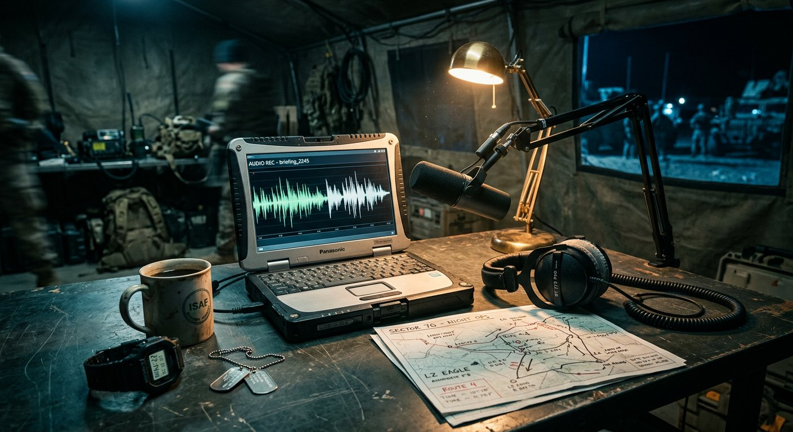

Vingt-trois mémos à écouter avant une session
Neuf briefings courts, en français, à écouter dans le trajet ou avant de lancer le jeu. Chacun traite un sujet fermé : sortir, jouer un rôle, tenir une économie de manche, éviter les erreurs qui coûtent un kit.
Briefing Aurora · mémo d’extraction
Briefing tactique Aurora · factions, Riptide, Martelo
MP3 français · contexte de saison et réflexes des nouvelles cartes.
Briefing Warfare · le rôle avant le réflexe
MP3 français · choix d’opérateur selon le besoin de l’équipe, véhicules, hélicoptères, prises de position.
Briefing Détonation · l’économie avant la visée
MP3 français · une vie par manche, Alloy, opérateur unique, flashs sans immunité.
Briefing erreurs coûteuses · les cinq qui vident un coffre
MP3 français · à écouter avant une session d’Operations, pas après.
Briefing sorties · la sortie d’abord, le sac ensuite
MP3 français · trois réflexes d’extraction : choisir avant de remplir, approcher sans courir, sécuriser ce qui est irremplaçable.
Briefing économie · marchand ou hôtel des ventes
MP3 français · le tri par rareté, les deux erreurs qui vident une économie, et pourquoi le médiocre part chez le marchand.
Briefing progression · l’ordre du site noir
MP3 français · missions de département, cache, centre de commande, champ de tir : pourquoi cet ordre et pas un autre.
Briefing butin · la valeur par case
MP3 français · la règle de division, le seuil de décision, ce qui domine le classement et ce qui le ferme.
Briefing munitions · le tableau des cinq issues
MP3 français · deux niveaux d’écart, un niveau d’écart, même niveau, un en dessous, deux en dessous : la règle complète et le plancher bleu.
Briefing butin · diviser par la place
MP3 français · l’exemple de la montre à deux cent mille contre le ventilateur médical à neuf cases, et la règle de la boîte sécurisée.
Briefing sortie solo · la règle des deux horaires
MP3 français · choisir sa sortie avant d’entrer, avancer dans les premières minutes, éviter le dernier quart d’heure.
Briefing progression · quatre compteurs
MP3 français · Warfare, Operations, opérateur, arme : ce qui fait monter chacun, et le plafond hebdomadaire.
Briefing opérateurs · seul ou à trois
MP3 français · l’atout qui dépend des autres, l’atout qui travaille pour soi, et comment choisir selon le format.
Briefing méthode · recouper une donnée
MP3 français · le jeu d’abord, deux bases ensuite, les outils communautaires en dernier, et la date comme condition.
Briefing plans de chargement
MP3 français · l’ordre des balles dans un chargeur mixte, débloqué au niveau 35, et le pas de tir 2.0.
Briefing missions remises à zéro
MP3 français · ce qui disparaît au changement de saison, et pourquoi la fin de saison n’est jamais la date limite d’un événement.
Briefing base de données · trier juste
MP3 français · valeur brute contre valeur par case, et pourquoi le grade n’est pas la rentabilité.
Briefing fin de saison · ce qui se vide
MP3 français · le journal de missions remis à zéro, et les échéances d’événement qui tombent avant la fin de saison.
Briefing jetons de Brakkesh
MP3 français · badge, jetons, paliers : trois choses à ne pas confondre, et les deux dates du 17 et du 19 novembre.
Briefing limites d’une base
MP3 français · ce que la base ne contient pas encore, et pourquoi une ligne manquante vaut mieux qu’une valeur inventée.
Mémo · les cinq règles
MP3 français · la synthèse du mémo en une minute, à écouter avant de lancer une session.
Mémo · les erreurs qui coûtent un kit
MP3 français · quatre erreurs, dans l’ordre où elles arrivent dans un raid.
